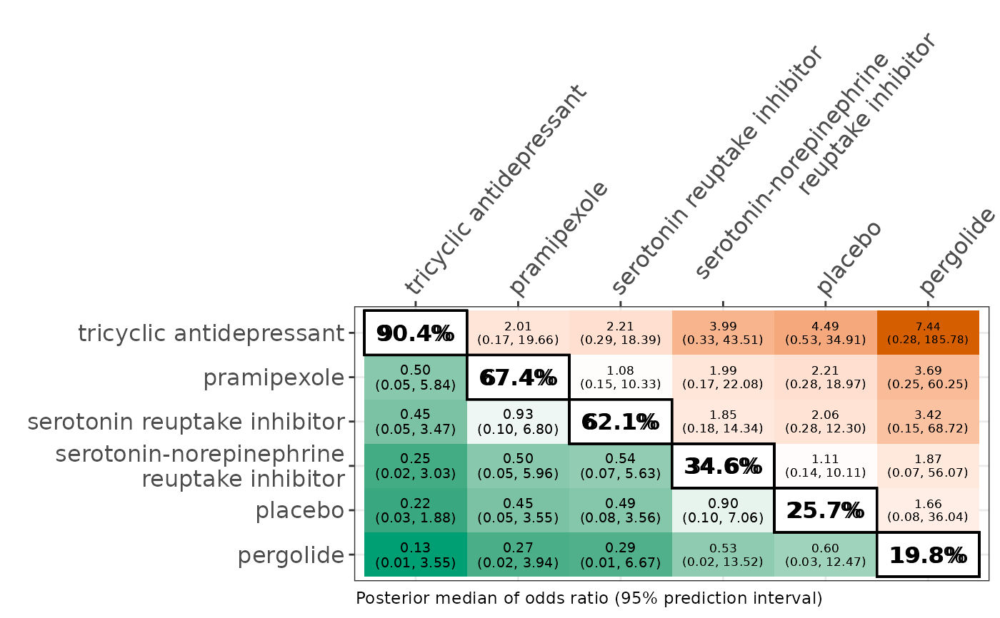

For one outcome, it creates a heatmap with the predicted effect measure for
all possible comparisons of interventions in the network.
For two outcomes, the heatmap illustrates these two outcomes for the same
effect measure in the upper and lower off-diagonals for all possible
comparisons of interventions in the network.
league_heatmap_pred can be used only for a random-effects
network meta-analysis and network meta-regression.
Usage
league_heatmap_pred(
full1,
full2 = NULL,
cov_value = NULL,
drug_names1,
drug_names2 = NULL,
name1 = NULL,
name2 = NULL,
show = NULL
)Arguments
- full1
An object of S3 class
run_modelfor network meta-analysis, orrun_metaregfor network meta-regression. See 'Value' inrun_modelandrun_metareg.- full2
An object of S3 class
run_modelfor network meta-analysis, orrun_metaregfor network meta-regression. See 'Value' inrun_modelandrun_metareg.- cov_value
A list of two elements in the following order: a number for the covariate value of interest and a character for the name of the covariate. See also 'Details'.
- drug_names1
A vector of labels with the name of the interventions in the order they appear in the argument
dataofrun_modelforfull1.- drug_names2
A vector of labels with the name of the interventions in the order they appear in the argument
dataofrun_modelforfull2. The elements must be a subset ofdrug_names1.- name1
The text for the title of the results that refer to the outcome or model under
full1.- name2
The text for the title of the results that refer to the outcome or model under
full2.- show
A vector of at least three character strings that refer to the names of the interventions exactly as defined in
drug_names1. Then, the league table will be created for these interventions only. Ifshowis not defined, the league table will present all interventions as defined indrug_names1.
Value
A league heatmap of the posterior median and 95% prediction interval
of the effect measure (according to the argument measure defined in
run_model) for all possible comparisons in the off-diagonals,
and the posterior mean of the SUCRA values in the diagonal.
Details
heatmap_league offers the following options to display
one estimated effect measure for all (or some) pairwise comparisons:
one outcome, with results in the lower triangle referring to comparisons in the opposite direction after converting negative values into positive values (in absolute or logarithmic scale), and vice versa. Darker shades of red and green correspond to larger treatment effects in the upper and lower triangle, respectively, for a beneficial outcome, and vice versa for a harmful outcome. Comparisons between interventions should be read from left to right. Therefore, each cell refers to the corresponding row-defining intervention against the column-defining intervention. Results that indicate strong evidence in favour of the row-defining intervention (i.e. the respective 95% prediction interval does not include the null value) are indicated in bold. A message is printed on the R console on how to read the heatmap;
two outcomes for the same model, namely, network meta-analysis (via
run_model) or network meta-regression (viarun_metareg). When one of the outcomes includes more interventions, the argumentfull1should be considered for that outcome. Comparisons between interventions should be read as follows: for the upper diagonal, each cell refers to the corresponding row-defining intervention against the column-defining intervention, and for the lower diagonal, each cell refers to the corresponding column-defining intervention against the row-defining intervention. Results that indicate strong evidence (i.e. the respective 95% prediction interval does not include the null value) are indicated in bold. A message is printed on the R console on how to read the heatmap;two models for the same outcome, namely, network meta-analysis versus network meta-regression. The instructions to read the heatmap are in line with the previous point. A message is printed on the R console on how to read the heatmap.
The function displays the effect measure as inherited by the argument
full1. For binary outcome, it can display the odds ratio,
relative risk, and risk difference. See 'Details' in
run_model for the relative risk, and risk difference.
For continuous outcome, it can display the mean difference, standardised
mean difference, and ratio of means. Odds ratios, relative risk and ratio
of means are reported in the original scale after exponentiation of the
logarithmic scale.
The rows and columns of the heatmap display the names of interventions
which are sorted by decreasing order from the best to the worst based on
their SUCRA value (Salanti et al., 2011) for the outcome or model under the
argument full1. The off-diagonals contain the posterior median and
95% prediction interval of the effect measure (according to the argument
measure as inherited in the argument full1) of the
corresponding comparisons.
The main diagonal contains the SUCRA values of the corresponding
interventions when the argument full1 refers to the
run_model function.
When the argument full1 refers to the run_metareg
function, the p-score (Ruecker and Schwarzer, 2015) is calculated for each
intervention while taking into account the covariate value in
the argument cov_value. P-score is the 'frequentist analogue to
SUCRA' (Ruecker and Schwarzer, 2015).
In the case of network meta-regression, when the covariate is binary,
specify in the second element of cov_value the name of the level for
which the heatmap will be created.
league_heatmap_pred can be used only for a network of interventions.
In the case of two interventions, the execution of the function will be
stopped and an error message will be printed on the R console. Similarly,
when the function is executed for a fixed-effect network meta-analysis or
network meta-regression.
References
Ruecker G, Schwarzer G. Ranking treatments in frequentist network meta-analysis works without resampling methods. BMC Med Res Methodol 2015;15:58. doi: 10.1186/s12874-015-0060-8
Salanti G, Ades AE, Ioannidis JP. Graphical methods and numerical summaries for presenting results from multiple-treatment meta-analysis: an overview and tutorial. J Clin Epidemiol 2011;64(2):163–71. doi: 10.1016/j.jclinepi.2010.03.016
Examples
data("nma.liu2013")
# Read results from 'run_model' (using the default arguments)
res <- readRDS(system.file('extdata/res_liu.rds', package = 'rnmamod'))
# The names of the interventions in the order they appear in the dataset
interv_names <- c("placebo", "pramipexole", "serotonin-norepinephrine
reuptake inhibitor", "serotonin reuptake inhibitor",
"tricyclic antidepressant", "pergolide")
# Create the league heatmap
league_heatmap_pred(full1 = res,
drug_names1 = interv_names)
#> Tips to read the table: row versus column.
